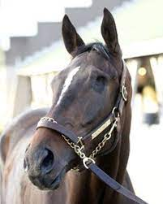
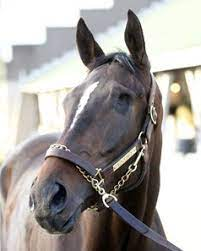

If we don't keep their spirits alive who will, we need to keep them alive for the generation to come so everyone will know that the the land is still free!
Adopt a Mustang or contact the American Wild Horse Campaign (AWHC).
* Tell Congress that you want to Co-Sponsor The Wild Horse and Burro Protection ACT (H.R.6635) .LINK
The horses on this page may not be mustangs, but for me this put a spin on the cruelty the Bureau of Land Management is doing to one-eyed and blind Wild Horses and Burros and the ones that have no eyes at all. These legends have been living on the land for years some of them are 20 years old that they have killed, and are killing. If they lived that long free they deserve to live wild and free forever or have someone love them for the rest of their lives instead of being killed by the Bureau of Land Management! But in the case of our free Wild horses with missing eyes or that are blind the Bureau of Land Management killed them or will kill them if they round them up with a Helicopter during their Round Ups! Why I ask again is it because they think no one would adopt them? Or they think they aren't pretty enough, or good enough? Why don't they deserve to live like these free horses in the following stories?
* This is the story of Ward a Blind 21 year old horse that Inspires people everywhere. Another horse that BLM would have euthanized if they lived free in the wild.LINK
Meet Endo the the horse with no eyes but he does trail-riding, jumping and his story will warm your heart. His owner picked him when he was a baby she was young and they grew together. This is his story if he were a mustang he would have been euthanized by the Bureau of Land Management.LINK
We need to Fight and Help the American Wild Horses and Burros!
(Left-Right) * Endo the horse with no eyes that does everything a horse with two eyes does and more.
* Mighty Heart a one-eyed race horse that proved he had what it took to run with the big dogs when he almost swept the triple crown. *Mighty Heart LINK*
* Finnick the Fierce a one-eyed Kentucky Derby contender that would have run in the race but scratched just before the race. *Finnick LINK*
* Un Ojo One of the best loved one-eyed Kentucky Derby Race contenders ever he was the one everyone wanted to see but he had to scratch just before the race due to a bruised hoof. *Un Ojo LINK*
* Global the 12-year-old Belgian Warmblood (Nabab de Reve–Cordula de Laubry, For Pleasure) only has one eye, but don't tell him that he was at the Merrill Lynch Show Jumping Championship in 2018 World Equestrian Games and like any typical show jumper was a flashy beautiful boy. *Global LINK*
* Adventure de Kanaan a Showjumper is an Amazing sport horse that is loved dearly by his rider and his family he is nicknamed "Addy". Addy's LINK
* THis is the story of a little girl and her 17 year old one-eyed horse that she does show jumping with. Just imagine how many other little girls would give love to those one eyed wild horses if BLM would not have killed them. *LINK*
* Slick the Champion Reining horse that proves he has what it takes with just one eye, and nothing stops him, as long as he has his girl human by his side to love him.LINK
If they would have been Wild Horses the BLM would have KILLED them! How do they justify killing a horse for simply having lost an eye or being blind? It's not OK and it needs to end.
 
